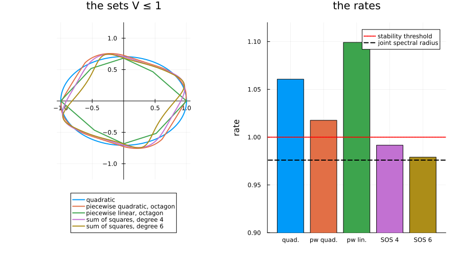

Try a richer template
Bound the joint spectral radius of my system proved stability with a bigger graph. This page keeps the one-node graph and changes the template instead: a sum of squares of degree 4 proves stability where a quadratic form cannot. Choosing a template lists the templates; here they are compared on one system, including SetProg families passed directly.
import PathCompleteCertificates as PCC
import Clarabel, HiGHS, JuMP
import LinearAlgebra
using SetProg, SumOfSquares, DynamicPolynomials
using Plots
const OPTIMIZER = Clarabel.OptimizerThe system
The rotation and the shear of Bound the joint spectral radius of my system, on the one-node graph: every difference below comes from the template.
A = [0.75 * [0.0 1.0; -1.0 0.0], 0.75 * [1.0 1.0; 0.0 1.0]]
problem = PCC.StabilityProblem(PCC.switched_system(A))
graph = PCC.common_graph(problem.system)
certified(template) =
PCC.certify(template, graph, problem; optimizer = OPTIMIZER, rtol = 1e-4)Five templates
The quadratic forms; sums of squares of degree 4 and 6, on the variables x of DynamicPolynomials; and two SetProg families passed directly, a function quadratic on each cone of a partition and one linear on each. The partition is given by an octagon, whose cones are those over its facets; the octagon is built with Polyhedra, on a linear programming solver.
LIBRARY = Polyhedra.DefaultLibrary{Float64}(
JuMP.optimizer_with_attributes(HiGHS.Optimizer, JuMP.MOI.Silent() => true),
)
normals = [[2, 1], [1, 2], [-1, 2], [-2, 1], [-2, -1], [-1, -2], [1, -2], [2, -1]]
octagon = polyhedron(hrep([HalfSpace(a, LinearAlgebra.norm(a)) for a in normals]), LIBRARY)
@polyvar x[1:2]
templates = [
"quadratic" => PCC.QuadraticTemplate(),
"piecewise quadratic, octagon" =>
Ellipsoid(; symmetric = true, piecewise = octagon),
"piecewise linear, octagon" => Polytope(; symmetric = true, piecewise = octagon),
"sum of squares, degree 4" => PCC.SumOfSquaresTemplate(2, x),
"sum of squares, degree 6" => PCC.SumOfSquaresTemplate(3, x),
]
certificates = [name => certified(template) for (name, template) in templates]
[name => certificate.rate for (name, certificate) in certificates]5-element Vector{Pair{String, Float64}}:
"quadratic" => 1.0606689453125
"piecewise quadratic, octagon" => 1.01763916015625
"piecewise linear, octagon" => 1.09918212890625
"sum of squares, degree 4" => 0.9915771484375
"sum of squares, degree 6" => 0.97906494140625On this system, the sums of squares go below one: on a single node, they prove what the quadratic form cannot, at the price of larger semidefinite programs, with more variables at each degree. The piecewise families do not, and the piecewise linear one does worse than the quadratic form: the best template depends on the system.
The certificates, drawn
On the left, the set $\{x : V(x) \le 1\}$ of each certificate, scaled to the same size: the shape each template allows. On the right, the rates, against the stability threshold and the joint spectral radius, $0.976$, found in Improve my bound.
directions = [[cos(t), sin(t)] for t in range(0, 2pi; length = 721)]
left = plot(;
aspect_ratio = :equal,
framestyle = :origin,
legend = :outerbottom,
title = "the sets V ≤ 1",
)
for (name, certificate) in certificates
p = PCC.homogeneity_degree(PCC.template(certificate))
points = [d ./ certificate(d)^(1 / p) for d in directions]
radius = maximum(LinearAlgebra.norm, points)
plot!(left, first.(points) ./ radius, last.(points) ./ radius; lw = 2, label = name)
end
rates = [certificate.rate for (_, certificate) in certificates]
right = bar(
1:5,
rates;
color = 1:5,
label = "",
legend = :topright,
ylims = (0.9, 1.12),
xticks = (1:5, ["quad.", "pw quad.", "pw lin.", "SOS 4", "SOS 6"]),
ylabel = "rate",
title = "the rates",
)
hline!(right, [1.0]; color = :red, ls = :dot, lw = 2, label = "stability threshold")
hline!(right, [0.976]; color = :black, ls = :dash, lw = 2, label = "joint spectral radius")
plot(left, right; layout = (1, 2), size = (900, 500), margin = 5Plots.mm)
What it proves
The sum of squares of degree 4 proves stability on a single node, and degree 6 comes within 0.3% of the joint spectral radius. The graph and the template are the two choices of a certificate (see How a certificate works): a bigger graph, a richer template, or both.
This page was generated using Literate.jl.